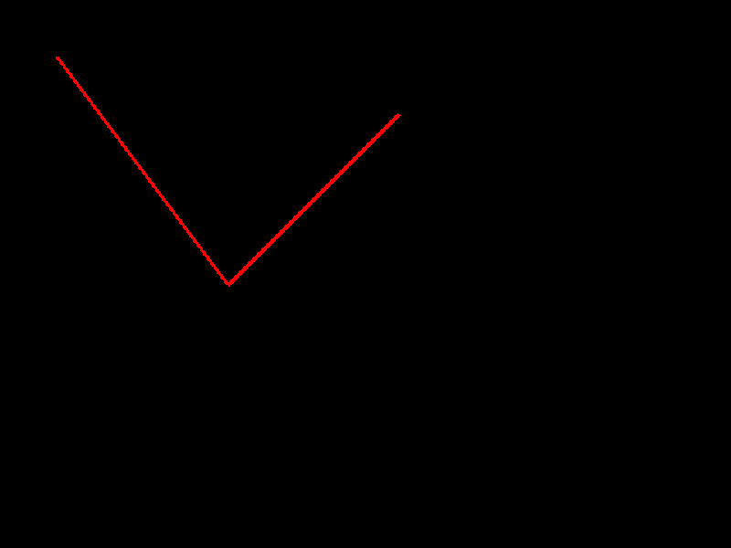

Draw spline: linear, minimum 2 points.
See also
Other Shapes (2D):
draw_circle(),
draw_circle_gradient(),
draw_circle_lines(),
draw_circle_lines_v(),
draw_circle_sector(),
draw_circle_sector_lines(),
draw_circle_v(),
draw_ellipse(),
draw_ellipse_lines(),
draw_ellipse_lines_v(),
draw_ellipse_v(),
draw_line(),
draw_line_bezier(),
draw_line_dashed(),
draw_line_ex(),
draw_line_strip(),
draw_line_v(),
draw_pixel(),
draw_pixel_v(),
draw_poly(),
draw_poly_lines(),
draw_poly_lines_ex(),
draw_rectangle(),
draw_rectangle_gradient_ex(),
draw_rectangle_gradient_h(),
draw_rectangle_gradient_v(),
draw_rectangle_lines(),
draw_rectangle_lines_ex(),
draw_rectangle_pro(),
draw_rectangle_rec(),
draw_rectangle_rounded(),
draw_rectangle_rounded_lines(),
draw_rectangle_rounded_lines_ex(),
draw_rectangle_v(),
draw_ring(),
draw_ring_lines(),
draw_spline_basis(),
draw_spline_bezier_cubic(),
draw_spline_bezier_quadratic(),
draw_spline_catmull_rom(),
draw_spline_segment_basis(),
draw_spline_segment_bezier_cubic(),
draw_spline_segment_bezier_quadratic(),
draw_spline_segment_catmull_rom(),
draw_spline_segment_linear(),
draw_triangle(),
draw_triangle_fan(),
draw_triangle_lines(),
draw_triangle_strip(),
get_shapes_texture(),
get_shapes_texture_rectangle(),
get_spline_point_basis(),
get_spline_point_bezier_cubic(),
get_spline_point_bezier_quad(),
get_spline_point_catmull_rom(),
get_spline_point_linear(),
set_shapes_texture()
Examples
pts <- matrix(c(50, 200, 350, 50, 250, 100), ncol = 2)
raylibr_screenshot(function() draw_spline_linear(pts, 3.0, "red"))
